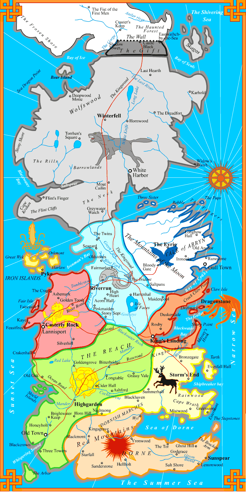

⛶
☾
Le Trône de Fer
·
Tome 1
· Guide d'écoute
I
II
◆
Chapitre en cours
🛡
Les grandes maisons
⚭
Familles & relations
MAISONS STARK · TULLY · ARRYN
sœurs
Eddard Stark
Catelyn Tully
Lysa Tully
Jon Arryn †
Robb
Sansa
Arya
Bran
Rickon
Robin Arryn
Jon Snow
MAISONS BARATHEON · LANNISTER
enfants de lord Tywin
Robert
Cersei
Jaime
Tyrion
Joffrey
MAISON TARGARYEN
derniers enfants du roi Aerys II †
frère & sœur
Viserys
Daenerys
Khal Drogo
mariage
parenté
fils illégitime
⁝⁝
Chapitres
♪
Musique
▶
Thème choisi selon le chapitre
Volume
20%
Position
0:00
0:00
✦
Carte

Agrandir la carte ⤢
👤
Personnages
✧
Lexique
✎
Notes & marque-page
Notes sur ce chapitre
Marque-page audio (où j'en suis dans Audible)
Guide d'écoute
Le Trône de Fer
Tome 1 · d'après A Game of Thrones
Commencer la lecture
Recommencer le tome (efface la progression)
Zoomer +
Fermer ✕